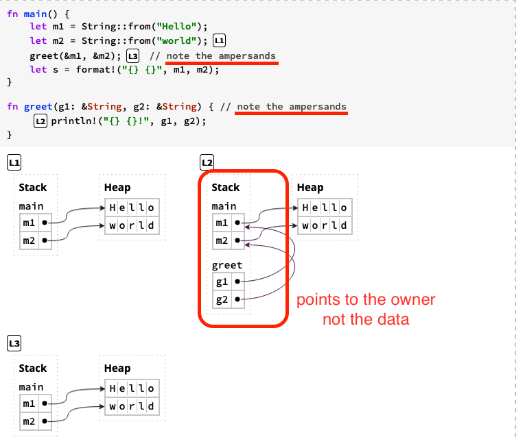
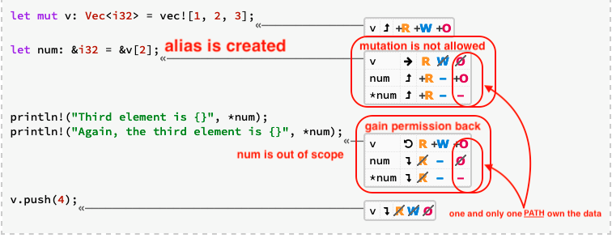

Ownership
üí° a set of rules that govern how a Rust program manages memory (heap) -> make memory safety guarantee without garbage collector
Ownership Rules
- Each data in heap has an owner.
- There can only be one owner at a time.
- When the owner goes out of scope, the value will either be dropped or returned
Move
- Ownership can be transferred by moves, which happen on assignments and function calls.
Moved heap data principle: if a variable x moves ownership of heap data to another variable y, then x cannot be used after the move.
fn main() { let s1 = gives_ownership(); // gives_ownership moves its return // value into s1 let s2 = String::from("hello"); // s2 comes into scope let s3 = takes_and_gives_back(s2); // s2 is moved into // takes_and_gives_back, which also // moves its return value into s3 } // Here, s3 goes out of scope and is dropped. s2 was moved, so nothing // happens. s1 goes out of scope and is dropped. fn gives_ownership() -> String { // gives_ownership will move its // return value into the function // that calls it let some_string = String::from("yours"); // some_string comes into scope some_string // some_string is returned and // moves out to the calling // function } // This function takes a String and returns one fn takes_and_gives_back(a_string: String) -> String { // a_string comes into // scope a_string // a_string is returned and moves out to the calling function }
Reference
References are non-owning pointers, because they do not own the data they point to

Implicit dereferencing of Rust
fn main() { let x: Box<i32> = Box::new(-1); let x_abs1 = i32::abs(*x); // explicit dereference let x_abs2 = x.abs(); // implicit dereference assert_eq!(x_abs1, x_abs2); let r: &Box<i32> = &x; let r_abs1 = i32::abs(**r); // explicit dereference (twice) let r_abs2 = r.abs(); // implicit dereference (twice) assert_eq!(r_abs1, r_abs2); let s = String::from("Hello"); let s_len1 = str::len(&s); // explicit reference let s_len2 = s.len(); // implicit reference assert_eq!(s_len1, s_len2); }
- works for multiple layers of pointers
Path
anything you can put on the left side of an assignment operator
- eg: a, *a, a[0], a.field
Permission
permissions are defined paths, describe how the compiler "thinks" about your program before the program is executed.
- Read (R): data can be copied to another location.
- Write (W): data can be mutated in-place.
- Own (O): data can be moved or dropped.
fn main() { // by default path has RO permission let a = 5; // add W permission by mut let mut b = 5; let mut v: Vec<i32> = vec![1, 2, 3]; // <- v: RWO let num: &i32 = &v[2]; // <- num: R O }
reference can temporarily remove permission on path, since some permission are mutually exclusive (data should not be aliased and mutated)
borrow checker make use of permission to check if your programme is safe
Permissions Are Returned At The End of a Reference's Lifetime
Simultaneous Aliasing and Mutation
Data can be aliased. Data can be mutated. But data cannot be both aliased and mutated.
Problems of Simultaneous Aliasing and Mutation
Aliasing and mutation at the same time is error-prone
- data race in concurrent programming
- deallocating at one variable and leaving others pointing to deallocated memory is dangerous
- mutating at one variable break promise expected by other variable
∴ Rust disallow simultaneous Aliasing and Mutation
Immutable references (shared references)

Mutable references (unique references)

Trick to downgrade W permission temporarily
fn main() { let mut v: Vec<i32> = vec![1, 2, 3]; let num: &mut i32 = &mut v[2]; let num2: &i32 = &*num; // alias is created // <- *num: R // <- *num2: R // <- num: R // <- num2: R O println!("{} {}", *num, *num2); }